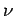

Inhalt Index DeskTop Bronstein

 Lineare Algebra Tensoren Transformation des Koordinatensystems
Lineare Algebra Tensoren Transformation des Koordinatensystems


Anstelle von (4.65) kann man auch
| (4.66a) |
oder abkürzend nach EINSTEIN
schreiben, d.h., über den doppelt auftretenden Index  ist zu summieren und das Ergebnis für aufzuschreiben. Die Summenkonvention legt allgemein fest: Tritt in einem Ausdruck ein Index zweimal auf, so wird der Ausdruck über alle vorgesehenen Werte dieses Index summiert. Tritt ein Index in den Ausdrücken einer Gleichung nur einmal auf, z.B.  in der Gleichung (4.66b), so bedeutet das, daß die betreffende Gleichung für alle Werte gilt, die der Index durchlaufen kann.
in der Gleichung (4.66b), so bedeutet das, daß die betreffende Gleichung für alle Werte gilt, die der Index durchlaufen kann.